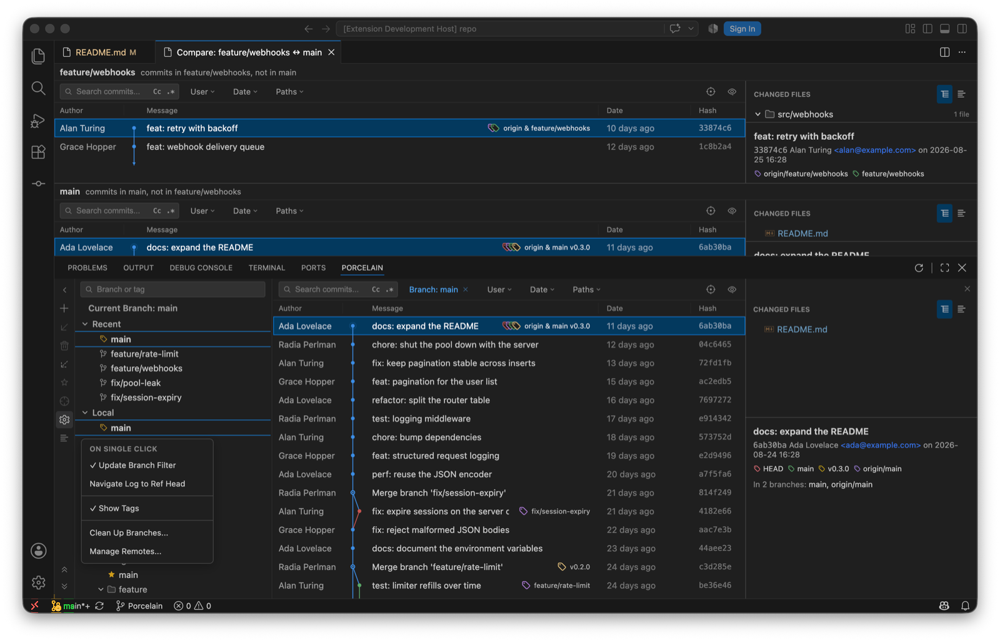
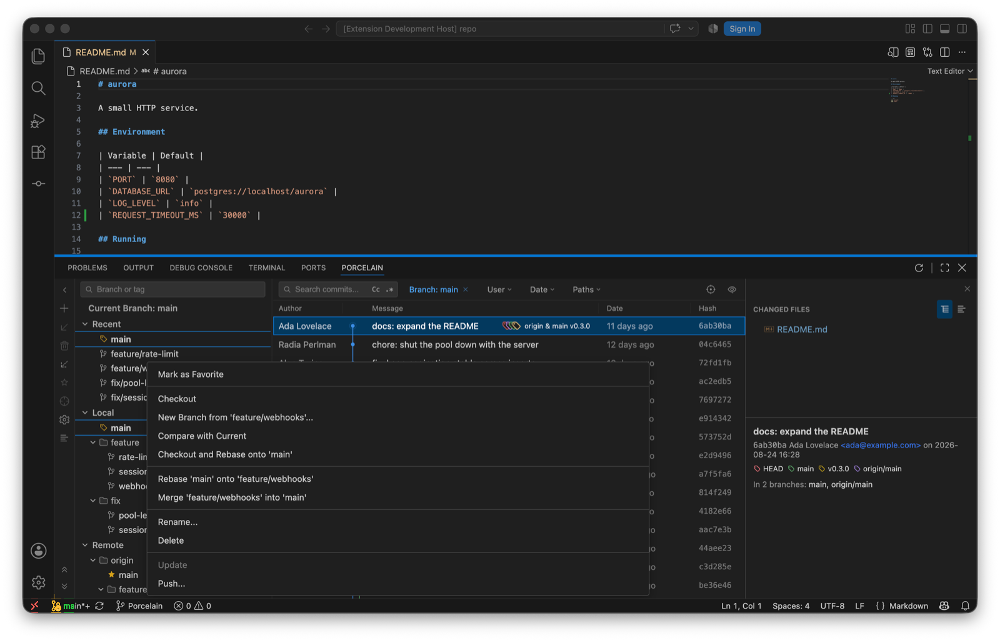
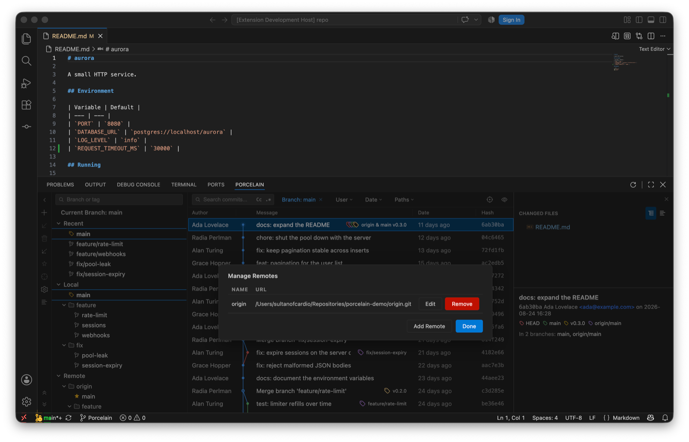
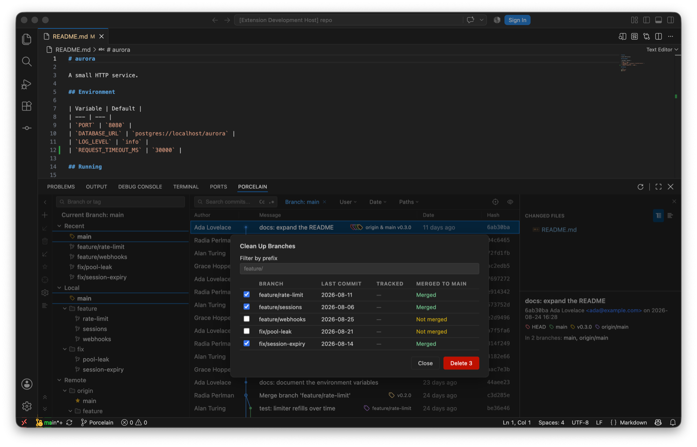

The branch tree on the left of the Git Log is IntelliJ's branch popup, kept open. It's searchable, and each section collapses.
feature/, fix/) or flat, per the Flatten List toolbar toggle. Favourites carry a star and sort first.Each local branch shows ahead/behind against its upstream, plus incoming/outgoing counts read from the refs the last fetch brought in, so they cost no network round-trip. The tree's own toolbar has New Branch, Update Selected, Delete Branch, Fetch, Mark as Favourite, Navigate Log to Selected Ref Head, Flatten List, and the gear. The gear menu chooses what a single click does (Update Branch Filter or Navigate Log to Ref Head), toggles Show Tags, and opens Clean Up Branches… and Manage Remotes….

| Item | Does |
|---|---|
| Checkout | Switches. When local changes would block the switch, Porcelain offers the smart checkout: stash, switch, restore. |
| Update | Fast-forwards from the tracked branch. Disabled, with the reason, when there's no upstream. |
| Push… | Opens the push panel targeting this branch. |
| Merge '…' into current · Rebase current onto '…' · Checkout and Rebase onto current | The three ways of bringing two branches together. Merge and rebase take options; see Rewriting history. |
| Compare with Current | The comparison tab. |
| New Branch from '…' | Name, checkout, and overwrite if the name is taken. Names go through git check-ref-format before anything runs. |
| Rename | Local branches. |
| Delete | A branch with unmerged commits is refused first; the force option names the commits it would discard, and counts them. |
| Delete on Remote | For remote branches. |
| Reset to upstream | On the checked-out branch only: drop local commits to match the tracked branch, with confirmation. |
| Mark / Unmark as Favourite | Star it. |

Checkout Tag, Push Tag, Delete Tag and Delete Tag on Remote. The two remote-bound items are disabled when the repository has no remote. New tags come from a commit's context menu in the log; give the tag a message and it's annotated.
From the branch pane's gear menu: a Name/URL table for adding, renaming, re-pointing and removing remotes. Names and URLs that look like git options are rejected before they reach the command line. Every remote reference in Porcelain resolves through the default remote or the branch's upstream, so a repository whose remote isn't called origin works the same.

Also in the gear menu: a table of local branches with last-commit date, tracked branch and merge status, filtered by a directory-style prefix. Merged branches are pre-selected. Unmerged ones are only ever deleted with an explicit, counted force.
